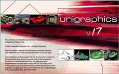
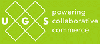
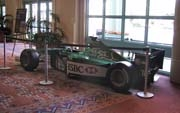
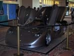
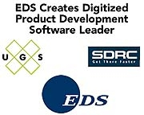
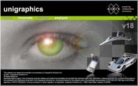
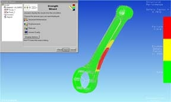
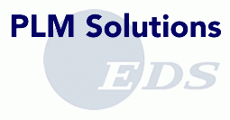
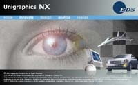

March, 2000:
The 24th Annual Unigraphics Users Group Meeting is held in Newport Beach, CA. Attendees from over 300 companies and organizations were at this meeting making it one of the most well represented meetings ever. One of the highlights was the UG version of the "Hollywood Squares" where meeting attendees got a chance to test their knowledge of Unigraphics and it's history (too bad the Virtual Museum was not around then as it would have proved a good source for questions).June, 2000:Unigraphics Solutions and General Motors Corp. sign the largest single contract for CAD/CAE/CAM/PDM software and services in the history of the industry. This was a renewal of the original contract signed while Unigraphics was still part of the EDS organization. The value of the contract was over $139 million and covered a period of three years and involved virtually all GM's worldwide automotive operations.July, 2000:After having been involved with the Unigraphics organization since 1982 John Mazzola announces that he will be retiring and as his replacement, the Unigraphics Solutions board of directors appoint Tony Affuso (shown at the right), currently the Executive Vice President of Products and Operations. as the new President and CEO of Unigraphics Solutions. Tony joined Unigraphics when in 1991 EDS acquired the company. Tony had been with EDS working in the group that was responsible for the implementation of CAD/CAE/CAM at GM. Before that Tony had been a manger in the manufacturing R&D group at Xerox and where back in 1983 he was part of a team that evaluated CAD systems including Unigraphics (however, Unigraphics did not win the business).September, 2000:The Fall Workshop 2000 is held at the Hilton in the Walt Disney World Resort in Orlando, FL. In addition to the normal events and activities there was a special farewell party for John Mazzola sponsored by the User GroupOctober, 2000:February, 2001:
Unigraphics Solutions releases V17.0 of Unigraphics. This released introduced the fully integrated Knowledge Based Engineering solution based on the Intent! language from Heidi Corp., a leader in supplying KBE tools. Among the many enhancements and new functionality introduced with V17.0 was something called DMX (Direct Modeling eXtensions) which allowed users to edit solid models and establish constraints and relationships between features of the model even if there were no modeling features in the model to start with. This allows models that were imported into Unigraphics from other system to be edited easily and quickly.Unigraphics Solutions completes the acquisition of Engineering Animation Inc. (EAI) of Ames, IA. EAI products include the line e-Vis and Vis-View software as well as many products designed for use on the internet. EAI had been a longtime partner with Unigraphics Solutions supplying tools used in ProductVision as well as being a licensee of Parasolid that they had incorporated into their products.
Due to the changes in the makeup of the company through the growth of other product lines and the recent acquisitions, Unigraphics Solutions announced that the name of the company was being changed to simply UGS. Even though the Unigraphics product line was still the largest product line in terms of revenue and number of customers, it was felt that it was no longer appropriate that the company name should include the name Unigraphics. While it is obvious that the UGS name still refers back to the Unigraphics heritage of the company, it will still allow more flexibility and will be easier to use as an overall corporate identity. In conjunction with the name change a complete new marketing effort was put in place including new corporate logo's and product promotions. It was also decided that the World Headquarters for UGS would be moved from St. Louis, MO to Cypress, CA. St. Louis would remain the headquarters for the Americas Sales Region and several of the corporate offices will remain there as well as the existing development group currently in St. Louis.May, 2001:
The 25th Annual Unigraphics Users Group Meeting is held in Orlando, FL.There were over 700 attendees at this meeting making it one of the better represented meetings. Of special interest at this meeting were several intriguing displays including a Jaguar F1 car, a Mossler/Trenne sports car and an Arctic Cat snowmobile. The two keynote presentations, by Jeffrey Harrow from Compaq and Professor Marvin Minsky from MIT, were very interesting and proved all with new views of technology and its role today. However the biggest thing at the meeting was the announcement made by UGS on the last day of the meeting, which is covered in the next paragraph below.July, 2001:On Wednesday evening at the Orlando Users Group Meeting, after the days sessions had ended, the news was released that EDS intended to take UGS private and to also purchase all of the assets of SDRC (Structural Dynamics Research Corp.) of Milford, OH. SDRC is one of the oldest and most well respected CAD/CAE/CAM/PDM companies in the industry and a pioneer in enterprise level data management, among other technologies. EDS intends on building a new business unit around these two organization, which will continue to be known as UGS and will be operated as an EDS subsidiary. The new company is projected to have sales in excess of $1.2 billion per year, which would make it the dominate supplier in its market segment. The announcement included the statement that the organization would continue to be headquartered in Cypress, CA and Tony Affuso would be appointed President of the new EDS unit.
October, 2001
UGS releases V18.0 of Unigraphics.  This version of Unigraphics included many enhancements to the user interface including more tools to help optimize the contents of the toolbars and to make it easier for a user to define and retain his personal settings. Also included in this version was more Direct Modeling functions as well as improved capabilities in the Knowledge Fusion product. One of the new modules introduced with this release was the Strength Wizard, a product that allowed a designer to define and evaluate the strength of solid models using a simple and easy to learn interface which included fully automatic mesh generation, assignment of loads and constraints, full post processing and a built-in report writer to help designers create and publish fully formatted, HTML based, analysis reports with full color images of fringe plots and failure/non failure reports.January, 2002
On October 1st EDS formally announced the creation of the new EDS business unit, PLM Solutions, which was formed by the merging of the various operating units from both UGS and SDRC. During the previous month, EDS had completed the tender offer for SDRC shares (September 4th) and the tender offer for UGS shares (September 27th). The new PLM Solutions business unit became the 5th leg of EDS and put it in a position to dominate the emerging Product Lifecycle Management (PLM) industry segment.The Unigraphics Users Group and ICCON (The Group for SDRC Software Users) were merged to form a single consolidated users group and as part of this process, adopted the new name PLM World, Inc. This new group will be officially launched at the upcoming, and first joint UGS and SDRC, users group meeting planned for Orlando, FL in April, 2002. This new users group will be representing the customers and users of all of the software products sold and supported by the new PLM Solutions business unit of EDS.April, 2002The 1st Annual PLM World Users Group Meeting is held in Orlando, FL at the Coronado Springs Resort at Disneyworld. There were 1599 registered attendees at this meeting making it the largest gathering of Unigraphics, I-DEAS and Teamcenter users ever. This was the first national meeting since the founding of PLM World, formed by combining the Unigraphics Users Group and the ICCON Exchange (the SDRC users group). In addition to this being the first opportunityt for many customers to learn about the new product suite from UGS, this meeting also presented the opportunity to hear 3 great keynote addresses. The first speaker was Homer Hickam, former NASA scientist, author of several books including The Rocket Boys which the movie October Sky was based on (the movie was previewed for the attendees Sunday evening before the opening of the meeting). The second keynote speaker was Richard Teerlink, former CEO of Harley-Davidson. The last keynote was by Joe Gibbs, former head coach of the NFL World Champion Washington Redskins and owner of Joe Gibbs Racing NASCAR team. This meeting provided the ideal forum for introducing the people and products of the new company, whihc included several demonstrations of Unigraphics NX, the first version of a product that, while based on Unigraphics, will also combine the best of I-DEAS functionality and capabilties.July, 2002

EDS PLM Solutions releases Unigraphics NX. This is the first release of the new "Next Generation" version of Unigraphics which will eventually bring the functionality and capabilites of both Unigraphics and I-DEAS together into a single consolidated product. Several of the enhancements in this release launched the process of moving I-DEAS based functionality into Unigraphics including a new revised Sketcher incorporating "Dynamic Navigation" and the abilty to interoperate with I-DEAS. Also there was a new interface to Imageware, a Class-A surface modeler used in industrial design and styling as well as reverse engineering. Unigraphics NX was also delivered the next phase of the "Usability" project, an effort officially launched with V17.0. This multi-release effort will continue and will now be directed at also making the eventual transition of the I-DEAS users to Unigraphics NX as efficient as possible.
Return to Lobby